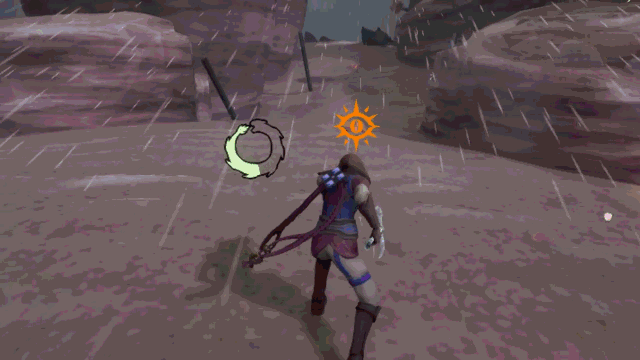

Ravenous Sky full playthrough, annotated so it points out specifically my contributions.
What is Ravenous Sky?
Ravenous Sky is my capstone project for University of Central Florida's Florida Interactive Entertainment Academy (FIEA) master's program. It was developed over the course of 8 months by myself and nearly 30 other students and contractors.
This project is a short Action Adventure in which I designed one of the core systems: grappling onto points in the environment to pull yourself towards them and prevent yourself from being blown off the level.
Additionally, I worked together with our UI artist to implement the menus and any UI elements you see in game.
Finally, I implemented the saving, loading, and checkpoint systems, ensuring that the player is respawned at sensible locations depending on where they fall off the level.
This game was developed in Unreal Engine 5.
A good showcase of the grappling system I worked on.
Grappling: The Value of Prototyping
Grappling was a really fun system to design because there's so much you can do with it, and it can interface so well with a game's other mechanics. For example, wind is the main obstacle or "enemy" in Ravenous Sky, always threatening to push you off a ledge or off course as you fly. So when designing grappling, I knew I wanted a variation where, rather than having the player pull themselves to the grapple point, they would instead be anchored to one, preventing them from being moved beyond a certain point.

The player anchoring to a point, keeping the wind and even debris from pushing them further.
The team and I spent much of our early prototyping time developing action blocks (small showcases for specific ideas and mechanics) just exploring the many implications of the grappling system.

This action block I made plays with the idea of a grappling point being launched from a destructible rock, pulling the player along with it.
Not all of the ideas I and my fellow technical designers prototyped made it in to the final product, but that's ok. It's a unique strength of technical designers that we can single-handedly explore new and existing mechanics, meaning that even dud ideas only waste the time of one team member.
Click here
Challenges: UI
Unreal's UI system was not intuitive to me at first. There are a lot of potential elements to incorporate into your layouts, and it isn't always clear what their effects will be or how they'll interact with each other.
That compounded with the fact that I was working directly with a UI artist, trying to bring their vision to life in engine. I had worked with artists before in smaller team projects, but never for UI and never on such a large project.
I was more familiar with Unity at the time, so I solved the intuition problem by looking for ways in which Unreal's UI system was similar to Unity's. I started using the Canvas element much more while still making use of Unreal's uniquely powerful UI options, such as the fact that every UI widget is itself a unique blueprint.
As far as working with the UI artist went, I made sure to check in with them frequently so that my UI implementations were up to their standards. I also helped them get better at providing clear, actionable quidance that I could more quickly and easily turn into UI.

The in-game journal, probably the most complicated UI I had to do. It starts empty, requiring entries to be unlocked and logged passively or through player's interacting with the environment. It also required each entry to populate the right side of the book with the correct info when clicked.
Click here
Lessons: Saving and Loading
The biggest challenge with saving and loading was resetting destructible objects that come after the checkpoint that the player loads into/respawns at. This task required me to partner up with the designer in charge of destruction.
The solutions we came up with varied in both complexity and effectiveness. At one point, I made an editor tool that checked the space in between checkpoints for destructible objects, with each checkpoint storing a list of objects that came after it. Upon load, the checkpoint the player used would look through its list and instruct each object to reset itself.
And that worked great! Until the destruction system had to be changed in such a way that it was no longer possible for destructible objects to simply reset themselves. The tool was useless at that point, and we went back to the drawing board.
Eventually, we settled on simply reloading the level entirely when the player respawns. I will admit, I don't love that solution. But I'm glad that I encountered this problem regardless. It gave me the chance to practice adapting to changing conditions, and forced me to let go of my ego. To meet deadlines, you sometimes just have to implement messy and blunt solutions. Knowing when to do so, and how to do so in such a way that improving the solution later is possible, are important skills.
Click here
Usage of AI Tools (ChatGPT)
What I didn't use them for
- Making design decisions
What I did use them for
- Researching Unreal's UI system
- Assistance writing widget blueprints early on
- Debugging*
*ChatGPT may not always know what exactly is causing a bug; in fact, it often just hallucinates a cause. But it is an effective tool for getting un-stuck when you're tired and frustrated after chipping away at a bug for hours. It's a good inspiration generator, if not always a good solution generator.